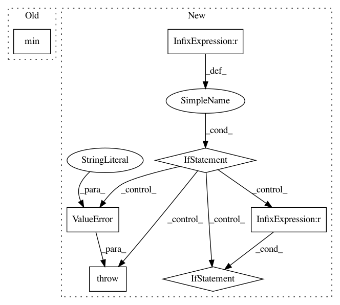

e7d58577095d95ee014e32c298ea0d53572ff56c,pyramid/arima/arima.py,ARIMA,fit,#ARIMA#Any#Any#,202
Before Change
scoring = get_callable(self.scoring, VALID_SCORING)
// don"t allow negative, don"t allow > n_samples
cv = max(min(cv, n_samples), 0)
def _fit_wrapper():
// these might change depending on which one
After Change
cv = max(cv, 0)
// if cv is too big, raise
if cv >= n_samples:
raise ValueError("out-of-sample size must be less than number "
"of samples!")
// If we want to get a score on the out-of-sample, we need to trim
// down the size of our y vec for fitting. Addressed due to Issue /ቸ
cv_samples = None
cv_exog = None
if cv:
cv_samples = y[-cv:]
y = y[:-cv]
// This also means we have to address the exogenous matrix
if exogenous is not None:
cv_exog = exogenous[-cv:, :]
exogenous = exogenous[:-cv, :]
// This wrapper is used for fitting either an ARIMA or a SARIMAX
def _fit_wrapper():
// these might change depending on which one
method = self.method
In pattern: SUPERPATTERN
Frequency: 3
Non-data size: 7
Instances
Project Name: tgsmith61591/pmdarima
Commit Name: e7d58577095d95ee014e32c298ea0d53572ff56c
Time: 2018-08-09
Author: tgsmith61591@gmail.com
File Name: pyramid/arima/arima.py
Class Name: ARIMA
Method Name: fit
Project Name: SINGROUP/dscribe
Commit Name: e0d2e4a9c86b057c58989277a19b98e763766f4b
Time: 2018-06-06
Author: lauri.himanen@aalto.fi
File Name: describe/descriptors/elementaldistribution.py
Class Name: ElementalDistribution
Method Name: __init__
Project Name: tensorflow/magenta
Commit Name: d49f7b8f26c4df585007fde1599bc13d2780b292
Time: 2017-05-06
Author: iansimon@users.noreply.github.com
File Name: magenta/music/sequences_lib.py
Class Name:
Method Name: extract_subsequence